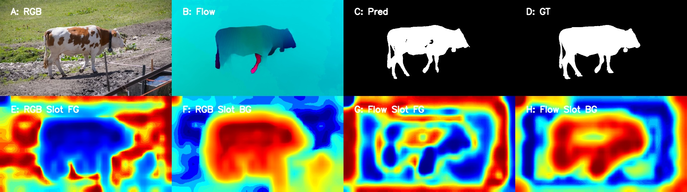

STRUCTURED SLOT AGGREGATION FOR CROSS-MODAL VIDEO OBJECT SEGMENTATION

Project Overview
This project implements the complete pipeline of the Guided Slot Attention Network (GSANet) for unsupervised video object segmentation. The model combines appearance (RGB) and motion (optical flow) cues, extracted through dual SegFormer-B2 encoders, and leverages slot-based representation learning to track and segment objects consistently across video sequences.
PyTorch
SegFormer
Slot Attention
Optical Flow (RAFT)
Computer Vision
Transformer Models
Technical Implementation
1. Saliency Pretraining (DUTS):
- Built a SegFormer-B2-based saliency network with atrous feature modules.
- Pretrained on DUTS-TR to learn objectness and boundary cues.
- Produced multi-scale saliency predictions as initialization.
2. Video Model (GSANet):
- Dual-stream encoders extract RGB and Flow features at 4 scales.
- Slot Generator creates K-means prototypes + attention-based slot prototypes.
- Reference frames provide additional temporal prototypes.
- Feature Aggregation Transformer (FAT) fuses global and local slot information.
- Decoder performs multi-scale fusion and mask refinement.
3. Datasets:
- Optical flow generated using RAFT.
- DUTS for pretraining; DAVIS-2016 train/test for finetuning and evaluation.
Results
Qualitative Visualization:

Panels (A-H):
- A — RGB Frame
- B — Optical Flow (RAFT)
- C — Predicted Mask
- D — Ground Truth Mask
- E — RGB Slot (Foreground)
- F — RGB Slot (Background)
- G — Flow Slot (Foreground)
- H — Flow Slot (Background)
Quantitative Results (DAVIS-2016)
- Mean IoU (J): 0.8518
- Boundary F-measure: 0.84
- J Recall: 0.89
- Temporal Decay: ~0.02